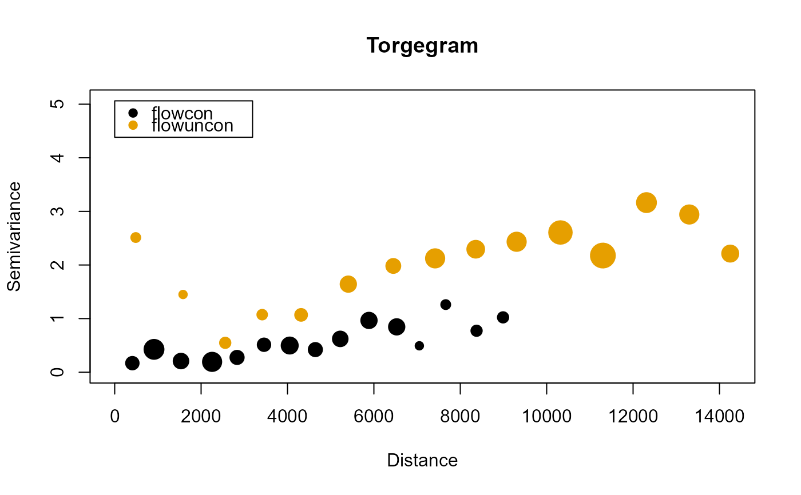

Compute the empirical semivariogram for varying bin sizes and cutoff values.
Torgegram(
formula,
ssn.object,
type = c("flowcon", "flowuncon"),
cloud = FALSE,
robust = FALSE,
bins = 15,
cutoff,
partition_factor
)A formula describing the fixed effect structure.
A spatial stream network object with class SSN.
The Torgegram type. A vector with possible values "flowcon"
for flow-connected distances, "flowuncon" for flow-unconnected distances,
and "euclid" for Euclidean distances. The default is to show both
flow-connected and flow-unconnected distances.
A logical indicating whether the empirical semivariogram should
be summarized by distance class or not. When cloud = FALSE (the default), pairwise semivariances
are binned and averaged within distance classes. When cloud = TRUE,
all pairwise semivariances and distances are returned (this is known as
the "cloud" semivariogram).
A logical indicating whether the robust semivariogram
(Cressie and Hawkins, 1980) is used for each type. The default is FALSE.
The number of equally spaced bins. The default is 15.
The maximum distance considered. The default is half the diagonal of the bounding box from the coordinates.
An optional formula specifying the partition factor. If specified, semivariances are only computed for observations sharing the same level of the partition factor.
A list with elements correspond to type. Each element
is data frame with distance bins (bins), the average distance
(dist), the semivariance (gamma), and the
number of (unique) pairs (np) for the respective type.
The Torgegram is an empirical semivariogram is a tool used to visualize and model
spatial dependence by estimating the semivariance of a process at varying distances
separately for flow-connected, flow-unconnected, and Euclidean distances.
For a constant-mean process, the
semivariance at distance \(h\) is denoted \(\gamma(h)\) and defined as
\(0.5 * Var(z1 - z2)\). Under second-order stationarity,
\(\gamma(h) = Cov(0) - Cov(h)\), where \(Cov(h)\) is the covariance function
at distance h. Typically the residuals from an ordinary
least squares fit defined by formula are second-order stationary with
mean zero. These residuals are used to compute the empirical semivariogram.
At a distance h, the empirical semivariance is
\(1/N(h) \sum (r1 - r2)^2\), where \(N(h)\) is the number of (unique)
pairs in the set of observations whose distance separation is h and
r1 and r2 are residuals corresponding to observations whose
distance separation is h. The robust version is described by
Cressie and Hawkins (1980). In SSN2, these distance bins actually
contain observations whose distance separation is h +- c,
where c is a constant determined implicitly by bins. Typically,
only observations whose distance separation is below some cutoff are used
to compute the empirical semivariogram (this cutoff is determined by cutoff).
Cressie, N & Hawkins, D.M. 1980. Robust estimation of the variogram. Journal of the International Association for Mathematical Geology, 12, 115-125. Zimmerman, D. L., & Ver Hoef, J. M. (2017). The Torgegram for fluvial variography: characterizing spatial dependence on stream networks. Journal of Computational and Graphical Statistics, 26(2), 253--264.
# Copy the mf04p .ssn data to a local directory and read it into R
# When modeling with your .ssn object, you will load it using the relevant
# path to the .ssn data on your machine
copy_lsn_to_temp()
temp_path <- paste0(tempdir(), "/MiddleFork04.ssn")
mf04p <- ssn_import(temp_path, overwrite = TRUE)
tg <- Torgegram(Summer_mn ~ 1, mf04p)
plot(tg)
